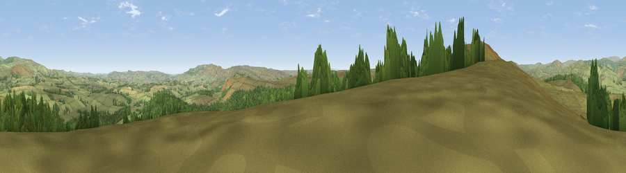

Viewpoint c12060_7857
#5151 in England · top 17% of its area beats it · —The view, rendered

A 360° render of this exact spot computed from the terrain model, tree cover and land cover — summer colours, afternoon light, calibrated against photographs of famous viewpoints. Real trees, hedges and buildings will differ in detail.
The panorama
Grey silhouette: terrain skyline in each direction (720 bearings, Earth curvature and refraction included). Dashed green: skyline with trees (+15 m) and buildings (+8 m) as obstacles. Blue strip: how far the ground is visible on each bearing.
Where the view opens
Wedge length = distance to the farthest visible ground on that bearing (vegetation-aware). Rings at 10, 25 and 50 km.
What fills the view
49% woodland · 49% grassland · 2% cropland
Angular shares of the visible panorama (visual magnitude), not map area. Landscape diversity 0.34 (0–1 Shannon).
Key numbers
More beautiful places nearby
The staircase of upgrades: each row has a higher view potential than everything closer. Driving times are estimates from straight-line distance, calibrated against real road routing — check an actual route before setting out.
| Place | Direction | Drive | Score |
|---|---|---|---|
| Cold Law | W · 1 km | ~2 min | 76.1 |
| Viewpoint near Netherton | NNE · 7 km | ~14 min | 76.5 |
| Wether Cairn [Wholhope Hill] | N · 9 km | ~17 min | 80.7 |
| Viewpoint near Hepple | ESE · 9 km | ~18 min | 82.4 |
| Viewpoint c12273_7856 | N · 11 km | ~20 min | 83.7 |
| Viewpoint c12396_7887 | N · 17 km | ~29 min | 85.7 |
| Viewpoint near Kirknewton | N · 26 km | ~42 min | 86.1 |
| Viewpoint near Chillingham | NE · 27 km | ~43 min | 88.1 |
55.32147, -2.11422 · source: screening · position refined by local search. Computed location — check access rights before visiting.